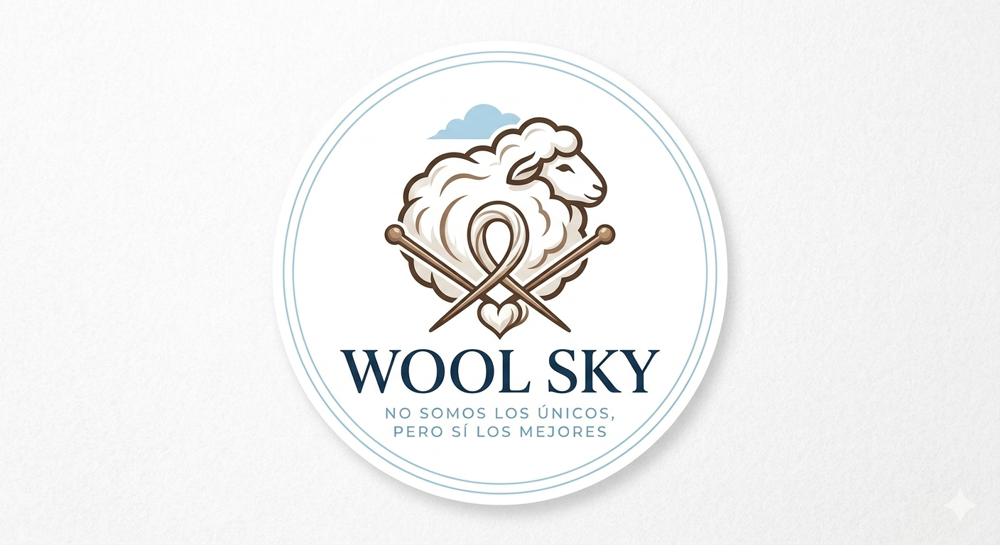
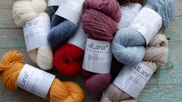

Ruta
.jpg)
Nueva Zelanda → México

Distribuidora de lana merino premium desde Nueva Zelanda hacia México.
Wool Sky es una empresa dedicada a la importación y distribución de lana merino premium proveniente de Nueva Zelanda hacia México. Nuestro objetivo es abastecer a la industria textil nacional con materia prima de alta calidad, utilizada en la fabricación de prendas premium. La lana merino es reconocida a nivel mundial por su suavidad, ligereza y capacidad de regulación térmica, lo que la convierte en un material ideal para ropa de alto rendimiento y uso diario. En Wool Sky buscamos conectar a productores internacionales con empresas textiles mexicanas, asegurando un proceso logístico eficiente, seguro y confiable.
Importar y distribuir lana merino de alta calidad desde Nueva Zelanda hacia México, facilitando el acceso a materia prima premium para la industria textil nacional, mediante un servicio logístico eficiente, responsable y confiable.
Ser una empresa líder en la importación y distribución de lana merino en México, reconocida por la calidad de sus productos, la eficiencia de sus procesos y su compromiso con el desarrollo de la industria textil.

Somos una empresa líder en la importación y distribución de lana merino en México, reconocida por la calidad de sus productos, la eficiencia de sus procesos y su compromiso con el desarrollo de la industria textil.
El proceso de importación de la lana merino se lleva a cabo en varias etapas, asegurando que el producto llegue a México en óptimas condiciones y cumpliendo con la normativa legal. 1. Compra y preparación del producto: Wool Sky realiza la compra de lana merino a proveedores certificados en Nueva Zelanda. Posteriormente, la fibra es clasificada, lavada, empacada y etiquetada. También se generan los documentos necesarios para su exportación, como factura comercial, lista de empaque y certificados de origen. 2. Transporte internacional: La mercancía se transporta por vía marítima desde Nueva Zelanda hacia México, atravesando el Océano Pacífico. Este medio se utiliza por su eficiencia y capacidad para transportar grandes volúmenes de carga de forma segura. 3. Entrada al país (aduana): Al llegar al Puerto de Progreso, en Yucatán, la mercancía pasa por el proceso de despacho aduanero. En esta etapa se revisa la documentación, se clasifican los productos bajo la fracción arancelaria correspondiente y se pagan las contribuciones necesarias. 4. Distribución nacional: Una vez liberada la mercancía, la lana merino es trasladada a las instalaciones de Wool Sky en México. Desde ahí, se distribuye a empresas textiles que la utilizan para la fabricación de prendas premium. Este proceso permite garantizar la calidad del producto, el cumplimiento legal y una entrega eficiente al cliente final.
Nueva Zelanda → México

Email: woolsky.import19@gmail.com
Instagram: @Woolsky.export19
.jpg)
$500/kg
.jpg)
$1200
.jpg)
$600
$3000